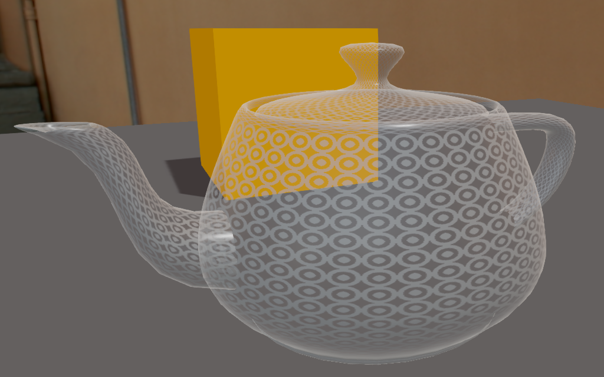

その他の属性
中級 アーティスト プログラマー

オクルージョン（Occlusion）
Occlusion プロパティでは、オクルージョンマップを設定することができます。これは既定のオクルージョン属性です。オクルージョンマップは、テクスチャーにベイクされたジオメトリ オクルージョン情報を使って、環境光と直射光を調整します。
次のスクリーンショットは、オクルージョンマップとキャビティマップの使用例です。
| オクルージョンマップ | キャビティマップ | 最終合成 |
|---|---|---|
 |
 |
|
| 環境光の粗いオクルージョン | 直射光のきめ細かなオクルージョン | 結果 |
| プロパティ | 説明 |
|---|---|
| Occlusion Map | マテリアル上でどれだけ環境光にアクセスできるかを決定する、オクルージョンマップのスカラープロバイダです。1.0 の場合、マテリアルが環境光によって完全に照らされていることを意味します。0.0 の場合、マテリアルが環境光によってまったく照らされていないことを意味します。 |
| Direct Lighting Influence | オクルージョンマップに適用され、直射光に影響を与えます。 |
| Cavity Map | 直射光と乗算される、キャビティマップのスカラープロバイダです。これにより、直射光が入らない非常に細かい空洞を定義することができます。キャビティマップは通常、薄い凹状のキャビティに対して定義されます。 |
| Diffuse Cavity | キャビティマップの拡散色への影響度を表す係数です。1.0 の場合、キャビティマップが拡散色に完全に影響を与えることを意味します。 |
| Specular Cavity | キャビティマップの反射への影響度を表す係数です。1.0 の場合、キャビティマップが反射に完全に影響を与えることを意味します。 |
透明度（Transparency）
Transparency プロパティで、マテリアルの透明度を変更できます。合成（Blend）、加算（Additive）、カットオフ（Cutoff） のいずれかを選択できます。
加算（Additive）
加算透過では、拡散色ならびに拡散色／発光色のアルファが考慮されます。
Alpha プロパティの値が 0.5 より小さい場合、反射ハイライトだけを見ることができます。マテリアル自体は全く見えません。
Alpha = 0.25 Alpha = 0.5 
加算モードでは反射ハイライトのみ見ることができます。 透過度は完全に加算されます。反射ハイライトは最大です。 Alpha プロパティの値が 1.0 以下の場合, マテリアルは、拡散／発光コンポーネントで半透明になります。拡散コンポーネントにアルファ値がある場合は、透明になります。
Alpha = 0.75 Alpha = 1.0  
反射ハイライト、アルファ付き拡散色、半透明拡散色 反射ハイライト、アルファ付き拡散色、不透明拡散色
| プロパティ | 説明 | |
|---|---|---|
| Alpha | アルファ値は次のように解釈されます。
|
。 |
| Tint | 透明レイヤーに色彩を適用します。 |
カットオフ（Cuttoff）
アルファ値が Alpha スライダーで指定したしきい値を超えた箇所のみ、マテリアルをレンダリングします。
次のスクリーンショットは、カットオフアルファ値の影響を示しています。
| Alpha = 0.01 | Alpha = 0.5 | Alpha = 1.0 |
|---|---|---|
 |
 |
 |
クリアコート
次の図は、クリアコートシェーディングを使って、物理ベースレンダリング（PBR）により車の塗装を再現しています。

詳細については、クリアコートシェーディングを参照してください。